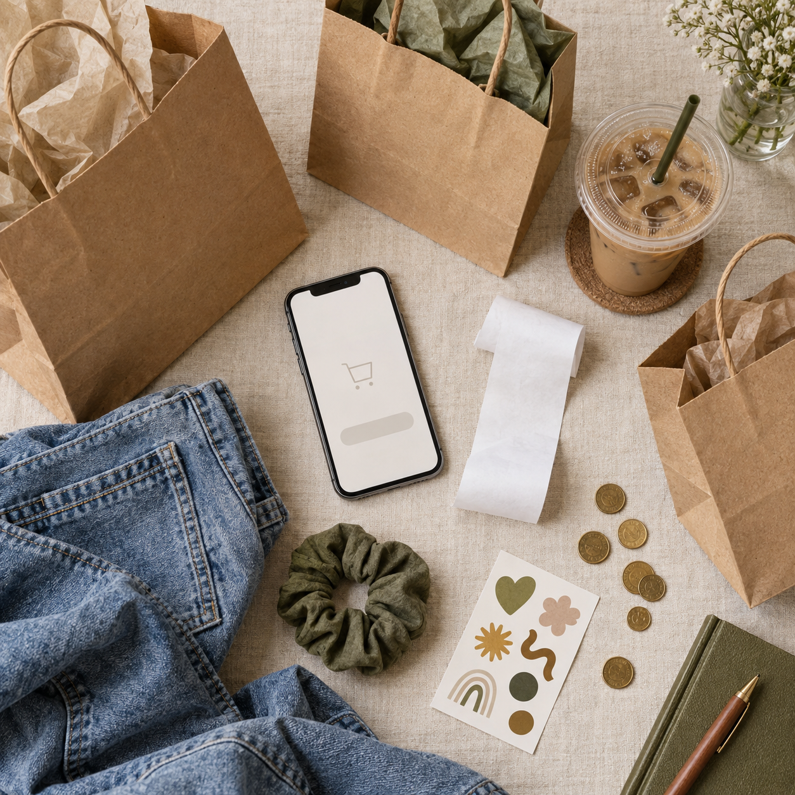
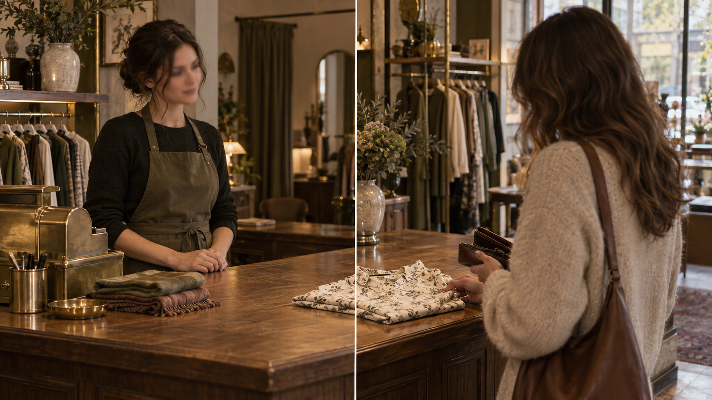

Shopping · The World of Money
One full pass through the British high street — Selfridges, Harrods, Marks & Spencer, Tesco and the small corner shops that still survive on side streets. Along the way we own twenty new words, unlock modal verbs can / could / may / might plus be able to, tame the tricky pairs hard / hardly · late / lately · near / nearly, add the phrasal verb to put, retell Somerset Maugham's «The Verger» and pick up the ready-made English you actually need in a fitting room and at the till.
Warm-up · What do you already know?
Eight quick multiple-choice questions on British shops and money. Answer from memory first, then check.
Warm-up · 15 phrases modern teenagers actually use about shopping & money

tap a card to flip · then answer the 6 questions below using at least 5 of these phrases
Now try — 6 warm-up questions
Vocabulary · 20 words to own

Tap each card to flip. These words come back in every section — the reading and «The Verger» especially.
📖 Full Topical Vocabulary from the textbook (Unit 3 · pp. 91-134)
Six grouped tabs. Every term has IPA transcription + Russian translation + example. These are the exact words the exam draws from.
Vocabulary speaking · 10 rounds, 10 games
Say the words. Play with them. Every round is a different game — no two the same.
- How would you like to withdraw the money today?
- Do you want us to attach a receipt by email?
- Would you like a currency exchange while you're here?
- Reply and add a reason with «because…».
- Say what you want attached (receipt / statement / new card).
Vocabulary practice · match + fill
Two rounds. Round 1: match 12 definitions to their terms. Round 2: complete 10 sentences with the right vocab word.
Round 1 · Definition → Term (12 items)
Each dropdown lists all 12 terms in alphabetical order. Pick the one that fits.
Round 2 · Gap-fill (10 sentences)
Type the missing vocab term. Multiple forms may be accepted (e.g. «immense / immensely»).
Features of a Good Shopping Centre
Pick 5 items you think are the MOST important (green) for a great shopping centre, and 5 you think are the LEAST important (red). Compare with your partner and defend your choice.
Features practice · gap-fill from the checklist
Ten sentences describing a shopping centre. Type the missing feature from the checklist above.
Shop Assistant · Two Sides of the Counter

Read both columns. Which side wins for you? Then answer the three discussion questions.
- You can work in a small local shop or a huge department store.
- The hours can be flexible — full-time, part-time or weekends only.
- You meet dozens of new people every day.
- Real opportunities for promotion (assistant → senior → floor manager).
- Staff discount on clothes, cosmetics and gadgets — sometimes 30% off.
- You keep learning about fashion, technology or food from the newest range.
- Great practice in customer English — polite phrases become automatic.
- A friendly team and a lively atmosphere — never a silent office.
- Cash bonuses at the end of the month if you hit your sales target.
- Long hours on your feet — no chance to sit down between customers.
- Weekends, evenings and public holidays are your busiest days.
- Sometimes customers are rude, reluctant to pay or want to return worn clothes.
- Base salary is often low — most of the money comes from bonuses.
- You may have to lift heavy boxes and refill shelves after closing.
- Uniforms can feel stiff and boring after the first month.
- Managing the till at rush hour is stressful and mistakes cost real money.
- Little social prestige — people rarely dream of being a shop assistant.
- Job security is limited — the shop can close if the chain goes bankrupt (see C&A).
Discussion · 3 questions
Shop-assistant practice · advantage or disadvantage?
Round 1: sort 10 statements into advantage / disadvantage. Round 2: fill 8 sentences with the missing verb, adjective or noun from the two columns above.
Round 1 · Sort 10 statements
For each statement, click «advantage» or «disadvantage». Wrong picks turn red; right picks turn green.
Round 2 · Gap-fill (8 sentences)
Type the missing word — verbs, adjectives and nouns pulled from both columns above.
The Verger · by W. Somerset Maugham
Read the skeleton retelling. Then rewrite it in your own words using every word from the bank below at least once.
Edward Foreman had been the verger of St Peter's Church in London for sixteen years. He loved the quiet church, the smell of old wood and the dignified silence during the service. But one day a new vicar arrived. He was young, energetic and, unfortunately, irritated by small imperfections. In the middle of a business talk he suddenly discovered that Edward could neither read nor write.
«I'm sorry, Foreman,» said the vicar, «but I can't have a verger in this church who is illiterate. You'll have to go.» Edward listened with dignity, took off his official robes and walked out into the cold London street. He wasn't angry. He was only very sad.
Walking down the High Street, he suddenly wanted a cigarette, but there was no tobacconist anywhere. He walked three streets and had to withdraw all the way to Victoria before he found one. On the way home an idea hit him: there must be dozens of streets in London without a small tobacco-and-sweets shop. Two weeks later, with all his savings, he opened one.
The little shop was an immense success. Within a year he opened a second one, then a third. Ten years later he owned a chain of twelve shops. The bank manager invited him to invest thirty thousand pounds and asked him to sign a couple of forms.
«I'm sorry, sir,» said Edward, «but I can't sign. I can neither read nor write.» The manager looked at him with amazement. «Do you mean to say, Mr Foreman, that you have built up this business without being able to read or write? Good heavens, man, what would you be if you could?»
«Well, sir,» said Edward with a quiet smile, «if I could read and write, I'd still be a verger at St Peter's Church.»
Phrasal Verb · TO PUT
One root, five directions. Learn the table, then fill six sentences with the right form.
| Form | Meaning (RU) | Example |
|---|---|---|
| put on | надеть (одежду); прибавить в весе | She put on a red coat and left the fitting room. |
| put off | отложить, перенести; отпугнуть, отбить желание | They put off the sale until next Saturday. · The long queue put me off buying anything. |
| put away | убрать на место; отложить (деньги на что-то) | She puts away £50 every payday for a summer trip. |
| put back | положить обратно (на полку) | He looked at the price tag and quietly put the jumper back. |
| put up with | терпеть, мириться с | I really can't put up with shop assistants who ignore you. |
Fill the gap · six sentences
Modal Verbs · Can / Could / May / Might + be able to

Four small rules · twelve exercises · one polite Katya at the shoe shop.
Theory · four small rules
Block A · Sort into 4 groups (ability / possibility / permission / request)
Block B · Choose may or might · 8 sentences
Block C · could / was able to / managed to · 6 sentences
OGE Grammar · Tasks 20-28 · Word transformation · 9 gaps · Shopping topic
A single short text with 9 gaps. Read carefully and type the correct grammar form of the word in CAPS.
OGE Vocabulary · Tasks 29-34 · Word formation · 6 gaps · Shopping topic
Add a suffix / prefix so the word in CAPS becomes the right part of speech. Watch for negative prefixes (un-, in-, dis-).
Reading · Shopping in Britain

Interview text from Unit 3 (Ex 15). Read once slowly, then attack the 12 comprehension questions and 10 sentence completions.
Q: What are the two most famous shops in London?
— Perhaps the two most famous shops in London are Selfridges and Harrods. These are both very large department stores. Of course there are many other department stores which exist in most British towns.
Q: What are the largest department stores in London?
— The John Lewis Stores is one of them, Marks & Spencer is another. In London a lot of the best department stores are in Oxford Street which is famous for its shopping.
Q: A decision has been made recently by the C&A Company to…?
— Because of competition from the Far East and the cheapness of many products, the profitability of many large department stores is in danger and C&A is one of them. By the way we used to call it «Coats and 'Ats». Now that's a joke. Talking seriously the company is reassessing its future plans. A decision has been made recently to withdraw from the High Street. As you know the High Street is an area where the shops are and where goods are sold.
Q: Many people use small or big supermarkets whether they have a car or not…?
— Currently many people use large or small supermarkets whether they have a car or not. Some people use public transport — buses — to take them to and from the supermarkets. It does mean however that the shopper usually has a lot of heavy shopping to take home with him on the bus. A car is much more useful.
Q: Nothing. A lot of shopping is still done at the small corner shops…?
— Nothing. A lot of shopping is still done at the small corner shops — small shops on the corner of the street. The small corner shops can often sell more specialized goods which a supermarket does not stock. For example, one prefers freshly baked bread and cakes from the baker's or only makes his own sausages. Some people would go to the florist's for bunches of flowers rather than buy pre-selected flowers in the supermarket.
Q: Tesco is the largest, followed by Sainsbury's…?
— Tesco is the largest followed by Sainsbury's, then it is ASDA which means «Associated Dairies» and the fourth one is John Lewis. So these are the four major supermarkets.
Discussing the text · 12 comprehension questions
Ten sentence completions from the text
Type the exact word or phrase from the interview.
Reading 2 · «What Makes Money Valuable?»
![Museum-catalogue still-life timeline of six forms of money on a long oatmeal linen table — a clay pot with a heap of barley grain (barter); a cowrie-shell and wooden-bead bracelet (shell money); brass hand-scales with two gold Roman coins (metal coinage); a folded 19th-century banknote (paper money); a leather wallet with a chip card sliding out (plastic); a smartphone with a glowing contactless icon (digital). Old world map on the wall behind, small brass numbered plaques under each object, warm side lighting](assets/img/section7-money-timeline.png)
The textbook reading on the four functions of money — plus a 12-item multiple-choice comprehension quiz.
We use money every day to pay for things we buy. We pay with either coins or paper money. This sort of money is known as cash. There is also another kind of money. It includes cheques (checks), credit cards and travellers' cheques.
The idea of having such a thing as money is one of the most fascinating ever developed by man. But many people don't know where this idea came from, or why money is valuable. Thousands of years ago, money was not used. Instead, man had the «barter» system. This meant that if a man wanted something he didn't have, he had to find someone who had it. Then he had to offer him something in exchange. And if that man didn't like what he was offered in exchange, the first man couldn't get what he needed.
In time, certain things came to be used as money because practically everyone would take these things in exchange. In the past, people used many things as money: shells, beans, cocoa beans, salt, grain, tobacco, skins, and even cattle. But coins are much easier to use than, say, cattle. They are easy to carry about.
Coins were first used in China. They were made of cheaper metals. People also started to use paper money. It cannot mattered that the money itself had no real value. It was backed by the government. And everybody uses this money. What makes money valuable? What use does it have for us?
First, it makes possible exchange and trade. Imagine you want a bicycle. You're willing to work hard for it by mowing lawns. But the person for whom you mow the lawn has no bicycles. He pays you with money and you take this to the bicycle shop and buy your bicycle. Money made it possible to exchange your work for something you wanted.
Second, money is a «yardstick of value». It was used to measure and compare the values of various things. You're willing to mow the lawn for an hour for 50 cents. A bicycle costs $25. You now have an idea of the value of a bicycle in terms of your work.
Third, money is a «storehouse of value». You can't store up your tomatoes for a long time, because they can spoil. But if you sell them you can store up the money for future use.
Fourth, money serves as a «standard for future payments». You may be paid by giving your word and promise to pay the rest later. You will not pay in eggs or tomatoes or baseballs. You and the bicycle store owner have agreed on exactly what you pay later. You use money as a unit in which later payments can be made.
Twelve comprehension MCQs
Read once, choose once. Score is 0-12.
Adverbs · dual forms + irregular degrees of comparison
Eight tricky pairs · one irregular table · sixteen practice items.
Theory A · irregular degrees of comparison
badly → worse → worst
little → less → least
much → more → most
far → farther / further → farthest / furthest
Theory B · eight tricky adverb pairs
| Adverb | Meaning | Example |
|---|---|---|
| hard | усердно, сильно | It's raining hard. You should work hard at your English. |
| hardly | едва, с трудом | I'm afraid I have hardly any money left. |
| late | поздно | Better to do things late than never. · John came too late. |
| lately | недавно, за последнее время | What have you been doing lately? Have you seen him lately? |
| high | высоко (буквально) | How high can you jump? He threw the ball high into the sky. |
| highly | высоко (в переносном смысле) | She speaks highly of her teachers. We think very highly of him. |
| near | рядом, близко | We live near London. He was standing near the door. |
| nearly | почти | It is nearly five o'clock. I nearly missed the train. |
| most / mostly | очень; больше всего / главным образом | I'd most certainly like an ice cream. · The weather was mostly dull that week. |
| right / rightly | правильно (глагольно) / справедливо, правильно (с причастиями) | I hope I've written it right. · The winner was rightly chosen. |
| wrong / wrongly | неверно (с глаголом) / неправильно (с причастием) | You've got it all wrong! · He was wrongly punished for something he had not done. |
| wide / widely | широко (физически) / широко (в переносном смысле) | Please open the window wide. · Her books sell widely. |
Practice A · Choose the right adverb · 10 items
Practice B · Comparative / superlative MCQ · 6 items
Focus · what vs which + fitting-room verbs
Two mini-rules · eight verbs of dressing/undressing · twelve practice items.
Theory A · what vs which
WHICH — a limited choice, 2-5 options are visible or implied.
Theory B · eight verbs of dressing / undressing
| Verb (put on) | Verb (take off) | Where you use it |
|---|---|---|
| to lace up | to unlace | trainers, boots, shoes with laces |
| to button up | to unbutton | a shirt, a jacket, a cardigan |
| to buckle up | to unbuckle | a belt, sandals with a buckle, a wristwatch strap |
| to zip up | to unzip | an anorak, a rucksack, a pair of jeans |
Practice · 12 items
Type the missing verb (present or past) or pick what / which.
Shop English · at the fitting room, at the till
🛎 Greeting & opening
🧥 Looking for a specific item
👗 Fitting room · trying on
💷 Prices, discounts & sizes
💳 At the till · payment
🔁 Returns, complaints, exchanges
Role-play A · Buying a blouse (Ex 39·1)
Shop assistant: Are you being served?
Customer: …
Shop assistant: I can do the size, but not the colour. These come in navy and dark green.
Customer: …
Shop assistant: Certainly, I'll get you a navy blouse size 12.
Customer: …
Shop assistant: Here you are. The fitting room is at the back if you want to try the blouse on.
Customer: …
Shop assistant: How does it fit?
Customer: …
Shop assistant: Very good. Would you like to follow me to the cash desk? How would you like to pay?
Customer: …
Shop assistant: Yes, we do. We take Visa, Mastercard and Amex.
Customer: …
Shop assistant: Here is your receipt. Thank you for shopping with us.
Role-play B · Buying shoes (Ex 39·2)
Customer: Hello. Could you help me?
Shop assistant: …
Customer: I'm looking for a pair of black low-heel shoes for everyday wear.
Shop assistant: …
Customer: 7 ½.
Shop assistant: …
Customer: I like this pair. They are just what I want. May I try them on?
Shop assistant: …
Customer: They are a bit tight on me, I am afraid. Can I have a pair half a size larger?
Shop assistant: …
Customer: Grey? May I look at them?
Shop assistant: …
Customer: They feel wonderful. How much are they?
Shop assistant: …
Customer: I'll pay cash.
Shop assistant: …
Customer: Thank you for your help. Goodbye.
📚 Homework · pick one
- Fashion show · 60-second monologue. Describe one of the five outfits from Unit 3 Ex 76 as if you were the commentator: «Ladies and gentlemen, let me present a new outfit designed by … As you can see it's …». Record and send.
- Design an advertisement. Pick one — (a) a new shopping centre, (b) a new bank, (c) a new fashion house — and design it as a one-page ad. Attach it as a photo or PDF (Unit 3 Project Work, p. 138).
- Translate «Leisure». The poem by W. H. Davies (p. 138): try your own Russian translation of the first eight lines. Send the original + your translation.
- Beatles homework. Listen to «Can't Buy Me Love» (p. 137), then in 5-7 sentences agree or disagree with the message. Use at least three modal verbs and two adverbs from Section 8.
- Written retelling of «The Verger». 80-140 words, using every word from the bank in Section 3.